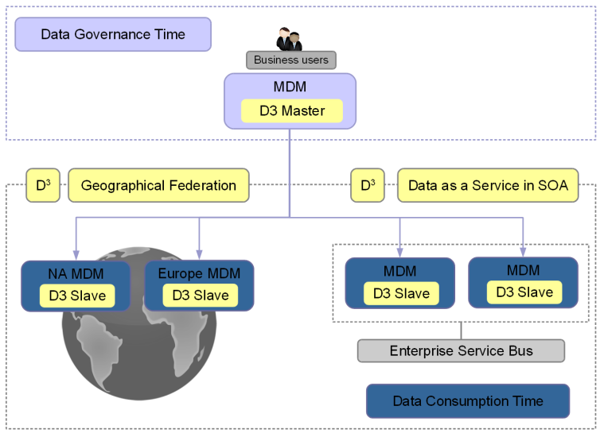

EBX5 offers the ability to send data from one EBX5 instance to other instances. Using a broadcast action, it also provides an additional layer of security and control to the other features of EBX5. It is particularly suitable for situations where data governance requires the highest levels of data consistency, approvals and the ability to rollback.
A typical D3 installation consists of one master instance and multiple slave instances. In the master, a Data Steward declares which data spaces must be broadcast, as well as which user profile is allowed to broadcast them to the slaves. The Data Steward also defines delivery profiles, which are groups of one or more data spaces.
Each slave must define from which delivery profiles it receives broadcasts.

The features of D3 also allow third-party systems to access data managed in EBX5 through data services. Essentially, when a system consumes the data of a delivery data space, the data is transparently redirected to the last broadcast snapshot. This ensures a more controlled and reliable view of the managed data.
Third-party systems can either access data directly through the master node or through a slave node. Thus, a physical architecture consisting of a master node and no slave nodes is possible.
If JMS is activated, conversation between a master node and a slave node is based on SOAP over JMS, while archive transfer is based on JMS binary messages.
If JMS is not activated, conversation between a master node and a slave node is based on SOAP over HTTP(S), while binary archive transfer is based on TCP sockets. If HTTPS is used, make sure that the target node connector is correctly configured by enabling SSL with a trusted certificate.
broadcast | Send a publication of an official snapshot of data from a master node to slave nodes. The broadcast transparently and transactionally ensures that the data is transferred to the slave nodes. |
delivery data space | A delivery data space is a data space that can be broadcast to authenticated and authorized users using a dedicated action. By default, when a data service accesses a delivery data space on any node, it is redirected to the last snapshot that was broadcast. See Data services. |
A delivery profile is a logical name that groups one or more delivery data spaces. Slave nodes subscribe to one or more delivery profiles. | |
Synchronization with subscribed slave nodes is performed in a two-phase commit transactional process. This delivery mode is designed to respond to a high volume of queries using load balancing and/or fault tolerance. It ensures the consistency of data in the cluster between slave nodes and their master delivery data spaces. Master and slave nodes use the same last broadcast snapshots. | |
Synchronization is performed in a single phase, and with each registered slave node independently. This delivery mode is designed to be used with geographically distributed and/or heterogeneous architectures where response time and network availability cannot be guaranteed. At any one time, slaves can be at different last broadcast snapshots. The synchronization processes are thus independent of one another and replay individual slave nodes are performed for certain broadcast failures. | |
An instance of EBX5 that can define one or more delivery data spaces, and to which slave nodes can subscribe. A master node can also act as a regular EBX5 server. | |
An instance of EBX5 attached to a master node, in order to receive delivery data space broadcasts. Besides update restrictions on delivery data spaces, the slave node acts as a regular EBX5 server. | |
An instance of EBX5 acting as both a master node and a slave node. Master delivery data spaces and slave delivery data spaces must be disjoint. |
Each slave node must have only one master node.
Embedded data models cannot be used in D3 data spaces. Therefore, it is not possible to create a data set based on a publication in a D3 data space.
The compatibility is not assured if at least one slave product version is different from the master.
Access rights on data spaces are not broadcast, whereas access rights on data sets are.
Data space information is not broadcast.
Data spaces defined in relational mode cannot be broadcast.
If a data space and its parent are broadcast, their parent-child relationship will be lost in the slave nodes.
Once a snapshot has been broadcast to a slave, subsequent broadcasts of any snapshot with the same name will result in restoring the originally broadcast version of that same name on the slave. That is, if the original snapshot on the master is purged and a new one is created with the same name and subsequently broadcast, then the content of the slave will be restored to that of the previously broadcast snapshot, and not the latest one of the same name.
To guarantee data space consistency between D3 nodes, the data model (embedded or packaged in a module) on which the broadcast contents are based, must be the same between the master node and its slave nodes.
On a slave delivery data space, if several slave nodes are registered, and if replication is enabled in data models, it will be effective for all nodes. No setting is available to activate/deactivate replication according to D3 nodes.
Replication on slave nodes does not take part in the distributed transaction: it is automatically triggered after commit.
Technical data spaces cannot be broadcast, thus the EBX5 default user directory cannot be synchronized using D3.